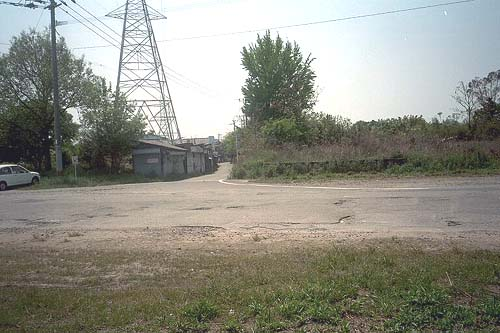
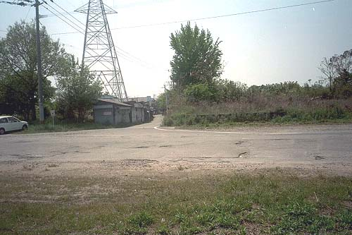

昭和56年住宅地図より 佐野ふとん店跡（2003年4月撮影）  左、同商店街跡。右、三井ストアー跡。その右隣が共同浴場跡。（2000年5月Ｔさん撮影） わずかに社宅が残る。かつて左側には保育園、診療所、郵便局等が並んでいた。（2000年5月Ｔさん撮影）
佐野ふとん店跡（2003年4月撮影）  左、同商店街跡。右、三井ストアー跡。その右隣が共同浴場跡。（2000年5月Ｔさん撮影） わずかに社宅が残る。かつて左側には保育園、診療所、郵便局等が並んでいた。（2000年5月Ｔさん撮影）
左、同商店街跡。右、三井ストアー跡。その右隣が共同浴場跡。（2000年5月Ｔさん撮影） わずかに社宅が残る。かつて左側には保育園、診療所、郵便局等が並んでいた。（2000年5月Ｔさん撮影）
わずかに社宅が残る。かつて左側には保育園、診療所、郵便局等が並んでいた。（2000年5月Ｔさん撮影）